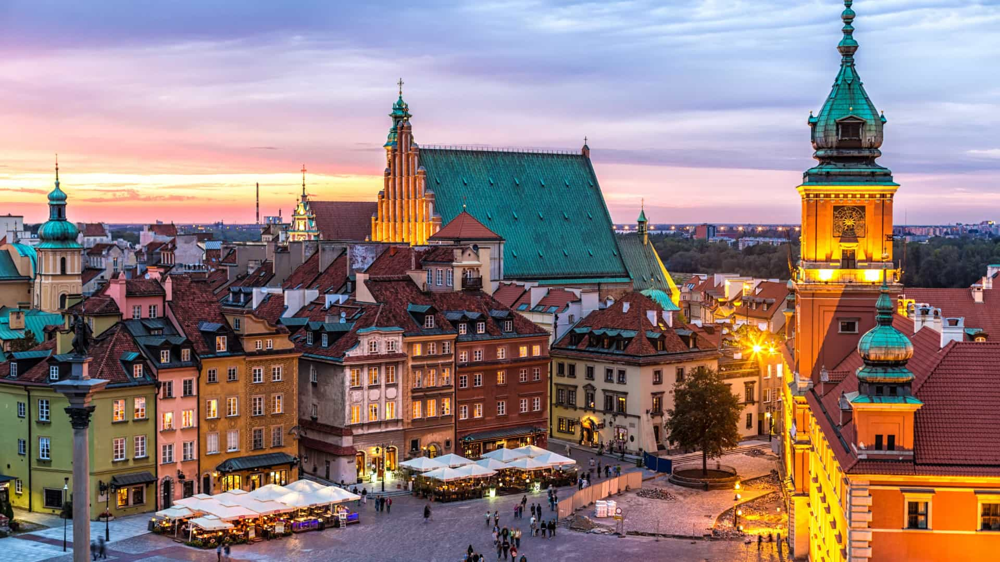
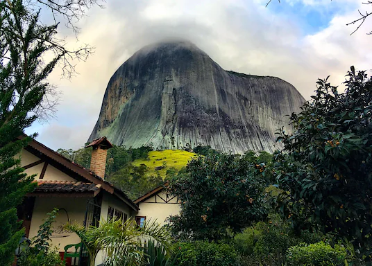

Roteiro de um jovem sonhador
Confira abaixo lindas e belas cidades que ja visitei ou que ainda irei visitar
Itens necessários para viagemZermatt-Suiça

Povo conhecido por viver da agricultura.
Cidade à qual me chama atenção pelas suas
lindas montanhas,
que ao chegar o inverno são cobertas por neve
Varsóvia-Polônia
Capital da Polônia, Varsóvia se destaca por suas lindas casas e
construções antigas. Possuo origem
Polonesa
o que me da muita vontade em conhecer esta linda cidade
Araxá-MG-Brasil

O nome Araxá é um nome indígena que significa 'Um lugar onde
primeiro se avista o sol'. Araxá era uma
pequena
tribo aculturada, que
foi aldeada nas margens do Rio Grande.
Viajei 3 vezes até Araxá para participar da Copa
Internacional de Mountain Bike que ali é cediada.
Domingos Martins-ES-Brasil
Domingos Martins é conhecido por suas belas montanhas de pedra
que cercam a cidade, cidade qual a origem
alemã predomina.
Conheci essa linda cidade em 2016, participando
do Campeonato Brasileiro de Mountain
Bike